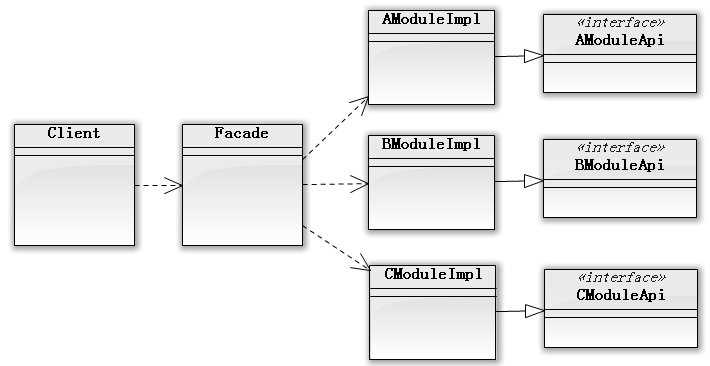
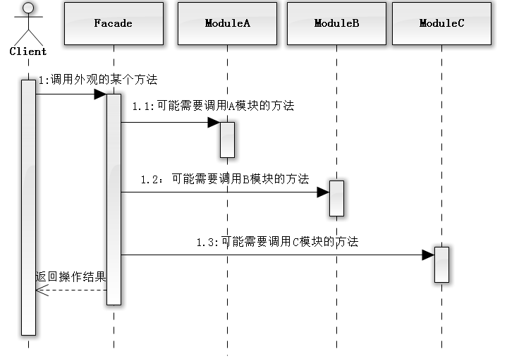

思考外观模式
本质：封装交互，简化调用。 封装了子系统外部和子系统内部多个模块的交互过程，从而简化了外部的调用。 设计原则：最少知识原则。 使用外观模式后，客户端只需要和外观类交互，不需要去关心子系统内部模块的变动情况。 当系统内部多个模块发生变化的时候，这个变化可以被这个外观类吸收和消化，并不会影响到客户端。 不知道的人使用外观模式，知道的人可以绕过外观模式，直接调用子模块。 何时选用外观模式 + 希望为一个复杂的子系统提供一个简单接口，使用外观对象来实现大部分客服端需要的功能，简化客户端的使用。 + 使用外观对象来将这个子系统与它的客户端分离开来，从而提高子系统的独立性和可移植性。 + 构建多层结构的系统，使用外观对象作为每层的入口，这样可以简化层间的调用。优缺点
优点 + 松散耦合 外观模式松散了客户端与子系统的耦合关系，让子系统内部的模块能更容易扩展和维护。 + 简单易用 客户端不需要了解子系统的内部实现，也不需要跟众多子系统内部的模块进行交互。 + 更好的划分访问层次 有些方法是对系统外的，有些方式是对系统内部使用的。把需要暴露的功能集中到外观中， 这样既方便客户端使用，也很好地隐藏了内部细节。 缺点 过多的或者不合适的Facade容易让人迷惑，到底是调用Facade好还是直接调用模块好。命名规范
外观类：Facade 模块接口：“模块名”+ModuleApi 模块实现：“模块名”+ModuleImplUML
类图  时序图 代码示例
接口//A接口 public interface AModuleApi { public void testA(); } //A实现 public class AModuleImpl implements AModuleApi { public void testA() { //... } } //B、C同A 外观public class facade { public void test() { AModuleApi a = new AModuleImpl(); a.testA(); //B、C同A } } 客户端public class Client { public static void main(String[] args) { new Facade().test(); } }